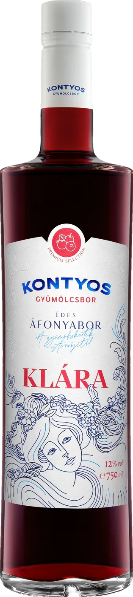
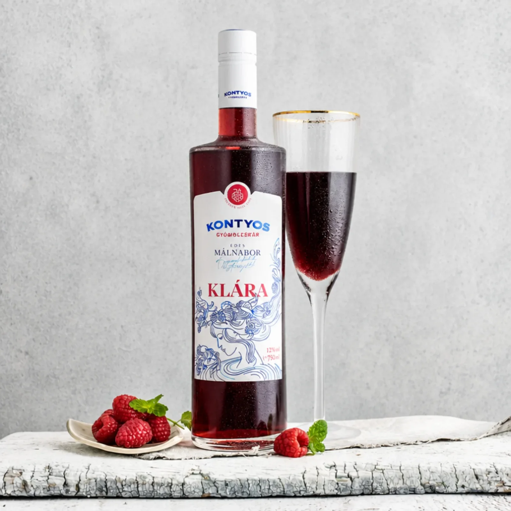

„Kiváló”
Lackó · 2022. 11. 15.Klára édes áfonyabor 0,75 l
100% éjfekete áfonyából készült.
- KISZERELÉS
- 0,75 l
- ALKOHOL
- 12% vol
- ZÁRÁS
- csavarzár

Elfogyott
- Várható kézbesítés
- GLS 3–5, MPL 1–3 munkanap
- Szállítás
- 1 800 Ft-tól · 20 000 Ft felett ingyenes
- Fizetés
- Bankkártya (SimplePay), átutalás, utánvét · regisztráció nélkül is
Illik mellé
Ft/l
Összetevők: erdei áfonya, cukor, víz · szulfitot tartalmaz
LEÍRÁS
Klára édes áfonyabor
100% éjfekete áfonyából készült. Összetevők: erdei áfonya, cukor, víz szulfitot tartalmaz
PARAMÉTEREK
- Alkoholtartalom
- 12 %vol
- Édes/Száraz
- Édes
- Gyümölcs
- Áfonyabor
- Egységár
- Ft/l
- Űrmérték
- 750 ml
- Palackzárás
- csavarzáras
- Súly
- 1480 gramm
- Technológia
- Reduktív, gyors feldolgozás
KÖTELEZŐ ADATOK
- Megnevezés
- Klára édes áfonyabor (gyümölcsbor)
- Alkoholtartalom
- 12 %vol
- Névleges térfogat
- 750 ml ℮
- Összetevők
- erdei áfonya, cukor, víz szulfitot tartalmaz
- Allergén
- szulfitot tartalmaz
- Előállító
- Kontyos Borház Kft., 6773 Klárafalva, Kossuth u. 183.
- Tételazonosító
- a címkén
Alkoholtartalmú italt 18 éven aluli személy részére nem értékesítünk. Fogyaszd mértékkel!
Leírás
100% éjfekete áfonyából készült. Összetevők: erdei áfonya, cukor, víz szulfitot tartalmaz
Paraméterek
- Alkoholtartalom
- 12 %vol
- Édes/Száraz
- Édes
- Gyümölcs
- Áfonyabor
- Egységár
- Ft/l
- Űrmérték
- 750 ml
- Palackzárás
- csavarzáras
- Súly
- 1480 gramm
- Technológia
- Reduktív, gyors feldolgozás
Összetevők, allergének
erdei áfonya, cukor, víz szulfitot tartalmaz
szulfitot tartalmaz
Kötelező adatok
- Megnevezés
- Klára édes áfonyabor (gyümölcsbor)
- Alkoholtartalom
- 12 %vol
- Névleges térfogat
- 750 ml ℮
- Összetevők
- erdei áfonya, cukor, víz szulfitot tartalmaz
- Allergén
- szulfitot tartalmaz
- Előállító
- Kontyos Borház Kft., 6773 Klárafalva, Kossuth u. 183.
- Tételazonosító
- a címkén
Alkoholtartalmú italt 18 éven aluli személy részére nem értékesítünk. Fogyaszd mértékkel!
Szállítás
MPL csomagautomata / PostaPont / posta: 1 800 Ft, GLS csomagpont: 2 100 Ft – 20 000 Ft felett ingyenes. GLS házhoz: 2 400 Ft, 25 000 Ft felett ingyenes. Személyes átvétel Klárafalván. Regisztráció nélkül is rendelhetsz.

A SOR
„A gyümölcskertek istennője.”
Olyan borokról álmodtunk, melyek egyszerre fejezik ki a gyümölcsök iránti rajongásunkat, a borkészítés iránti szenvedélyünket és a borászatunk otthona, az idilli-zöld Klárafalva iránt érzett szeretetünket. Egyedülálló minőségű, értékes gyümölcsökből készült friss borainkat egy olyan tiszta szépség testesíti meg, melyet csak a természet adhat.
VÁSÁRLÓI VÉLEMÉNYEK
5,009 vélemény alapján · a webshop értékelései
„Szuper!”
Melinda · 2022. 09. 24.„Nem lehet megúnni!”
Laci · 2022. 08. 03.„Szuper!”
Melinda · 2022. 05. 16.„Kitűnő aromák jellemzik, mindenkinek ajánlani tudom az ünnep fényét emeli”
Mária · 2021. 12. 14.„Zamatos áfonya íz, nagyon élvezetes.”
Lajos N. · 2021. 09. 26.A KLÁRA SOR TÖBBI TAGJA